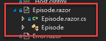

[Blazor] 基本 Blazor Component 筆記
Blazor 畫面基本組成是 Razor Component 物件，他可以是顯示元件，也可以是頁面之一，所有的設定都在 .razor 的檔案內做設定，以下是一些在開發過程中，覺得比較重要的筆記內容
筆記
Code Behind
預設 Blazor Component 的寫法是將 HTML 與 Code 寫在同一個檔案內，但當程式碼比較複雜的時候，寫在同一個畫面就會變得比較麻煩，或是習慣將 HTML 和 Code 分開寫的朋友，這個是 Code Behinde 的寫法
-
建立一個與 blazor 物件名稱一樣但附檔名為 .cs 的檔案，例如
Episode.razor.cs，這樣子命名 Visual Studio 就會自動合在一起顯示
-
在
editor.razor.cs的程式碼內，繼承ComponentBase1
2
3
4
5using Microsoft.AspNetCore.Components;
public class EpisodeBase: ComponentBase
{
} -
在
Episode.razor檔案繼承上列的 class1
@inherits EpisodeBase
這樣就可以做到 Code Behind 的效果
注入
原本的寫法是
1 | @inject SampleSerivce samepleService |
當單獨寫一個 class 時，則要這樣子寫
1 | public class EpisodeBase: ComponentBase |
多重路由規則
一個 Blazor component 可以擁有多個路由規則，設定方式就是寫多個 @page 就可以了
1 | @page "/manage/new" |
當有使用到變數時，則須同時宣告 parameter
1 | [] |
Markdown Editor
套件選擇: Markdig
-
html
1
2
3
4
5
6
7
8
9
10
11
12
13
14<div class="row">
<div class="form-group col-6">
<label for="description">描述</label>
<textarea class="form-control" id="description" rows="10"
@bind="formData.Description"
@bind:event="oninput"></textarea>
</div>
<div class="col-6">
<span>Preivew</span>
<div>
@((MarkupString) Preview)
</div>
</div>
</div> -
code
1
2public FormData formData = new FormData();
public string Preview => Markdown.ToHtml(formData.Description);
文字結合變數
在 blazor component 顯示下，如果寫 somepage/@data.Id ，編譯時會抱怨便顯示這個錯誤
Blazor RZ9986 — Component attributes do not support complex content (mixed C# and markup)
簡單的解法是指用 string template formate 的方式改寫，當改成 @($"somepage/{data.Id}")，就可以成功編譯
生命週期
Blazor 的生命週期有幾個，且有分同步與非同步，這部分要留意
-
初始化
-
同步: OnInitialized
1
2
3
4protected override void OnInitialized()
{
...
} -
非同步: OnInitializedAsync
1
2
3
4protected override async Task OnInitializedAsync()
{
await ...
}
-
-
設定參數
-
之前
1
2
3
4
5
6public override async Task SetParametersAsync(ParameterView parameters)
{
await ...
await base.SetParametersAsync(parameters);
} -
之後
- 非同步
1
2
3
4protected override async Task OnParametersSetAsync()
{
await ...
}- 同步
1
2
3
4protected override void OnParametersSet()
{
...
}
-
剩餘其他的，請參閱生命週期章節